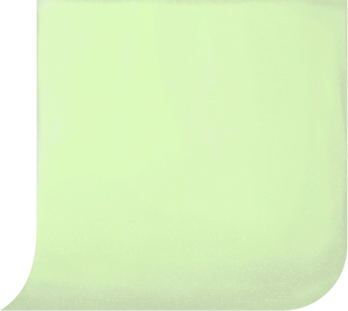

trigger_hide_verytoplogo
trigger_bg_to_black
trigger_bg_to_black
-->


삶의 무게에 짓눌려 잊고 있었던 소망들을 떠올릴 수 있는 소소하고 따듯한 국수가게를 만들어나가고 싶다.


a5
A5_P
국수는 맛있게 드셨나요? 저희 소망국수는 손님의 마음에 담긴 소망들을 항상 응원하고 있습니다. 손님의 소망은 무엇인가요?

b1


또 하나의 소망이 나무에게 걸린다. 소망나무가 새로운 소망을 바라보며 활짝 미소짓는다. 우체통이 소망이 걸리는 게 그렇게 좋냐고 묻자 소망나무가 말한다.
“응! 사람들은 따듯한 소망을 걸어주며 나를 의미있게 해. 내가 공장에서 본 사람들은 모두 냉랭했는데 소망국수가 있는 이 곳은 달라. 소망이 하나 걸릴 때마다 내가 축복받았다는 생각이 들어. 이렇게 따듯한 사람들 사이에서 나도 따듯한 존재가 되어 내 역할을 하며 살아갈 수 있다는 게 말이야.”
b2


B2_P
소망나무의 이야기를 듣는 우체통의 표정이 점점 어두워진다. 우체통이 차분하게 입을 뗀다.
“소망나무야. 이곳의 사람들을 너무 믿기만 해선 안돼. 전엔 내 안에도 편지들이 가득했고, 그때까지만 해도 난 소중한 존재였어. 내 안에 소중히 준비해온 편지를 넣으며 활짝 웃던 아이도 있었어. 그 아이가 나를 보며 짓던 웃음은 아직도 내 기억 속에 생생한데, 지금의 나를 봐. 이제 아이들은 내가 왜 존재하는지도 몰라. 내 몸엔 장난삼아 그려진 낙서와 스티커들이 가득해. 옆면의 철거 안내문이 보이니? 결국 사람들은 자신에게 필요가 없으면 널 버리고 말거야. 네가 경험했던 공장의 차가운 사람들도, 지금 웃으며 따듯한 말을 해대는 이 사람들도 결국엔 똑같은 거야. 처음의 따듯한 모습은 그냥 일부야. 믿으면 안돼.
우체통이 괴로운 표정으로 말한다.
“내 안에 들어있던 편지들이 다 불타버린 적이 있어.”
우체통은 아픈 기억을 되짚어 본다. 으슥한 골목 뒤에서 빨간 불빛과 함께 연기가 피어올랐다. 유난히 어둡고 공기가 바싹 마른 날이었다. 빨간 불빛을 단 담배꽁초는 꺼지지 않은 채 우체통의 입구를 헤집고 들어왔다. 담배를 말아쥔 그 손은 어딘가 익숙한, 앳된 손이었다. 우체통은 고개를 들어 그 손의 주인을 확인했다. 담배연기가 그의 안을 점점 채워나가는 동안, 손의 주인을 확인한 우체통의 뇌리 속도 혼란해졌다. 퇴근하던 국수집 할머니의 신고로 우체통이 열렸을 땐 소중한 편지들이 모두 잿더미가 되어버린 후였다.
b3

B3_P
소망나무가 마음 아파하며 가지를 떨고 있다. 우체통이 다시 말을 시작한다.
“소망나무야. 사람들을 사랑했던 나는 너무도 아팠어. 나와 닮은 네가 그렇게 아프지 않길 바라. 너는 소망국수의 사장을 믿지? 나에게 담배를 집어넣은 그 사람이 네가 사랑하고 굳게 믿는 지금의 소망국수 사장이야. 나도 그 애를 진심으로 좋아했어. 교복을 입고 그 앳된 손으로 편지를 써 넣던, 미소 가득한 학생. 그 애의 편지에 담겨있던 깊고 따듯한 마음이 난 너무도 좋았는데. 오랜만에 찾아온 그 애가 나에게 던진 건 전의 따듯한 손길이 아닌 빨간 불씨뿐이었어.”
자욱한 연기, 우체통이 자신 안에서 타오르는 편지들에 좌절하는 동안 학생은 그 곳에 한참이나 멍하니 서 있었다. 소방관들이 왔다 간 뒤에도 그 자리에 그대로였다. 한치의 미동도 없는 듯 보였지만 가까이서 봤다면 분명 온몸을 떨고 있었다는 걸 알 수 있었을 것이다. 할머니는 학생을 바라보다 가게 안으로 데리고 들어갔다. 따듯한 국수 한 그릇이 학생 앞에 놓인다. 그는 국수에서 피어오르는 김이 우체통에서 뿜어져 나왔던 아픈 열기와는 사뭇 다르다는 생각을 한다. 학생은 갈 곳이 없었다. 국수는 너무도 따듯했다.
b4

B4_P
문에 달린 작은 종이 흔들리며 청명한 소리를 축축한 공기 중으로 퍼뜨린다. 사장의 발소리가 빗소리 틈을 비집고 들어온다. 우체통은 조용해지며 눈코입을 숨긴다. 빗방울들이 아스팔트 바닥으로 낙하하며 둔탁한 마찰음을 내고 있었다. 소망나무는 가지에 서려오는 한기를 느낀다. 아슬하게 매달린 소망들의 잉크가 번져 흘러내리고 있었다. 소망국수 사장이 비에 젖은 소망들과 소망나무를 걱정하며 가게 안으로 조심스레 소망나무를 옮긴다.
c1

C1_P
소망나무는 창에 비친 자신을 본다. 물에 젖어 검게 번져버린 사람들의 소망이 자신에게 매달려 있는 모양을 본다. 소망들이 닿아 있는 가지 하나하나에 한기가 스며든다. 여기저기에서 배어나온 한기가 서로 질기게 이어져있는 듯 하다. 문득 두려워진다.
‘버려진다. 내가 버려진다. 사장은 왜 우체통을 불태웠을까. 사람들은 왜 우체통을 잊었을까. 사람들의 본질은 결국 차가운 면인건가? 따듯했던 그 모습은 모두 거짓이었나? 내 가지에 걸린 소망들은? 국수로 소망을 전하고 싶다는 따듯한 마음으로 차갑게 굳어있던 나를 깨워준 첫 번째 소망도?’
c2

창밖으로 아이들이 보인다. 우체통 주위를 돌아다니며 술래잡기를 하고 있다. 우체통 옆에 쪼그려 숨어있던 한 아이가 우체통에 붙은 종이를 물끄러미 바라보다가 술래에게 잡히고 만다. 아이가 깜짝 놀라며 벌떡 일어서자 우체통에 붙은 철거 안내문이 팔랑거린다. 이내 문에 달린 종이 요란스럽게 울리며 아이들이 쏟아져 들어온다. 아이들이 조잘조잘 이야기하며 소망나무의 앞을 빠르게 스쳐 지나간다. 아까 우체통 옆에 쪼그려 있던 아이가 나무 앞에 멈춰선다.
아이가 까치발을 든 채 책상을 둘러보더니 펜을 들고 서툴게 소망을 적어내려간다. 소망을 다 적은 아이가 키에 비해 높은 나무를 올려다본다. 사장이 아이에게 다가온다. 아이의 손에 들린 소망 종이를 소망나무에게 매어준다.
우체통 사라지지 안앗으면 조켓다.
소망국수 사장은 아이에게 왜 그렇게 생각하냐고 묻는다. 아이가 울상이 되어서는 말한다.
“없어지는 건 슬프잖아요! 오늘 선생님한테 제 거 장난감 뺏겼는데 너무 슬펐어요. 있던 게 이제 나한테 없는 거니까 믿기가 싫어요.”
c3

사장은 가만히 생각에 잠긴다. 빨간 우체통, 그리고 없어짐. 유난히 차갑고 건조한 공기가 흐르던 그 날이 떠오른다. 인생에서 가장 끔찍했지만 또한 따듯했던 그 날.
사장이 기억하는 그 날의 첫 번째 감각은 공허감이었다. 어린 시절, 아이는 정말 자주 편지를 썼다. 보육원에서 알려줬던 엄마의 미국 주소로 아이는 열심히 편지를 보냈다. 고사리손으로 써낸 편지에 답장이 오지 않는 까닭은 글씨가 알아보기 힘들어서겠지, 엄마가 한국말을 잊어버려서 그런 거겠지 생각했다. 아이는 조금만 자라면, 꼭 편지의 주소로 가서 엄마를 만날거라고 다짐했다. 머리가 좀 자라고, 보육원에서 독립한 후에는 답장이 오지 않는 편지를 보내지 않았지만 하나의 목표는 변하지 않았다.
밥을 굶어 가면서 돈을 모아 미국으로 떠날 티켓을 어떻게든 마련했다. 떠나기 전, 확인차 잠시 들른 보육원에서 이상한 이야기를 들었다. 분명히 미국 땅 어딘가에 존재한다고 생각했던 엄마가, 마음 속으론 항상 살아 숨쉬고 있던 엄마가 없다고 한다. 이젠 기억 속 희미해진 잔상으로만 남은 엄마의 모습이 마지막 자취였다고 한다. 사장은 그동안 수없이 오발송되었을 편지들을 떠올렸다. 보육원에서 비틀거리며 나와 마주한 빨간 우체통. 너는 내 편지들을 어디로 보내주었니. 존재하지도 않는 것에 대한 사랑을 담아 설레는 마음으로 마주했던 그 우체통이 순간 시뻘겋고 끔찍한 괴물로 보였다. 처음 피워 본 맛도 더럽게 매운 그 담배를 우체통 안으로 던져 버린 건 한순간이었다. 연기가 피어올랐다. 그리고 할머니를 만났다. 없어짐에 대한 마음의 공허를 국수에서 피어오르는 따듯한 김이 조금이나마 채워주었다.
우체통이 뭔지 아냐는 사장의 질문에 아이가 편지 써서 넣는 거 아니냐고 대답한다. 우체통을 한 번도 이용해 본 적 없다는 아이의 말에 사장이 잠시 고민하더니 창고로 들어가 무언가를 준비한다.
d2
햇살이 빛난다. 소망나무는 자신에게 달린 소망들을 다시 들여다본다. 차양의 그림자 사이로 빛이 부드럽게 소망나무를 감싸고 있었다. 까맣게 번져 한기가 돌았던 소망이 빛을 받아 다양한 색깔로 아름답게 빛난다. 다만 그림자가 진 부분에는 여전히 검정색 소망들이 한기를 내뿜으며 서로 얽혀 있다. 소망나무는 소망국수의 사장과 우체통을 바라보며 생각에 잠긴다.